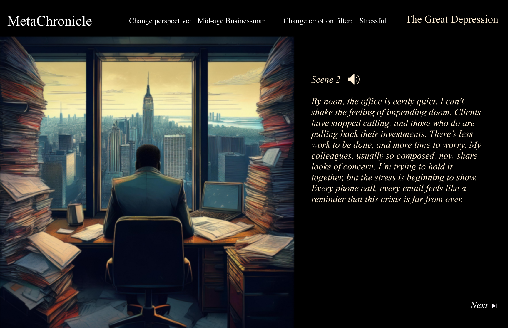

MetaChronicle is an interactive platform that uses generative AI to create dynamic, personalised historical narratives. The project allows users to explore key historical events from various perspectives and emotional filters, enhancing engagement and fostering critical thinking. By integrating ChatGPT, the platform generates narratives that adapt in real time based on user choices, while Stable Diffusion creates contextual visuals that bring these stories to life.
The underlying research focuses on how perspective and emotion shape storytelling and understanding of historical events. Drawing from narrative studies and educational psychology, the platform aims to encourage empathy and deepen users' comprehension of history by offering a multifaceted view of significant events. Additionally, the project explores the ethical implications of AI, particularly regarding bias in AI-generated content and its potential impact on historical representation. It also highlights the power of generative AI in enabling personalised, real-time storytelling while addressing concerns about its ethical use in creative fields.
This project demonstrates the intersection of generative AI, human-computer interaction, and education, offering a novel way to experience history through interactive, ethical, and emotionally engaging narratives. It serves as a tool to provoke critical thinking and broaden perspectives on past events.